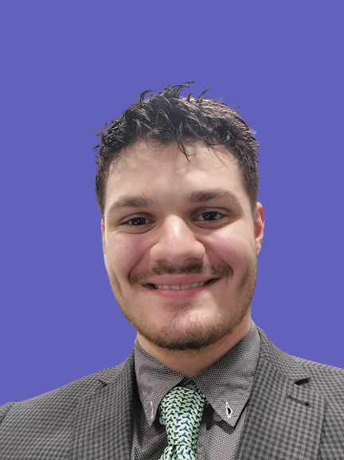

Hi, I am Denis Adrian Vaida, a full time student currently doing Web development and Cyber Security!
Nice to meet you!

This is me! A full-time student diving into web development and cybersecurity. I love figuring out how
things work online and keeping them safe. But I'm not just about tech stuff—I'm also really into art.
Whether it's painting or digital design, I'm all about letting my creative side shine. Balancing coding with
creativity, I'm on a fun journey through school where I get to learn, create, and have a blast!